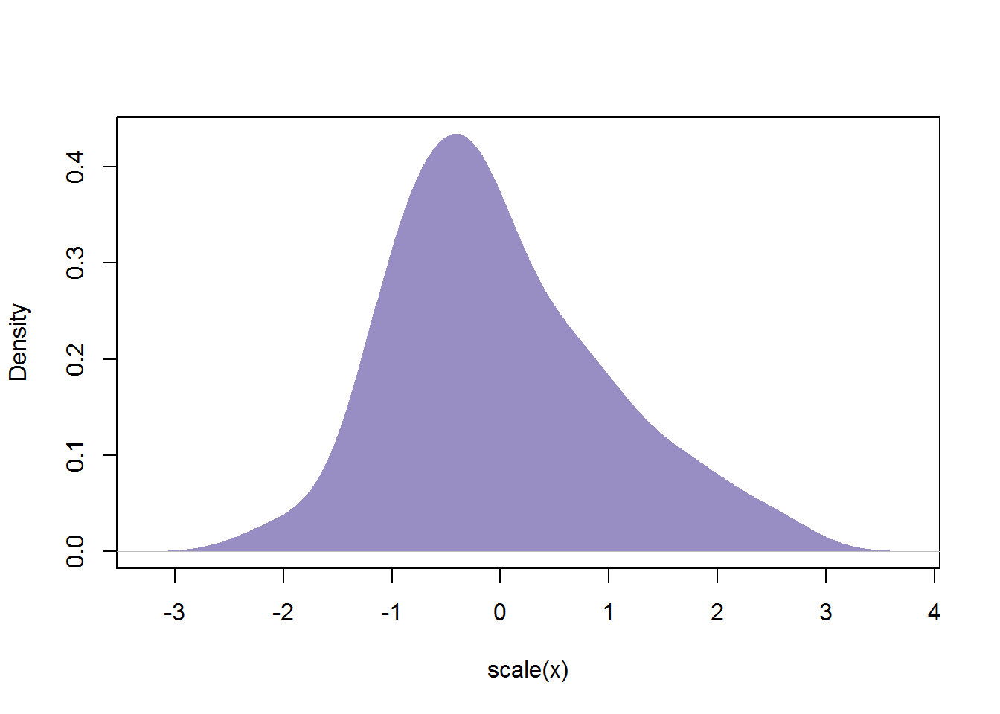

Predictor standardisation and their p-values
What is standardisation?
Standardisation is a linear transformation of a variable that consists of two operations: centring and scaling.
Centring means subtracting the mean of the variable from its every point. This has the effect of changing the mean of the variable from whatever it was before to 0. Visually speaking, if you picture a distribution of a variable, centering it will shift it along the x-axis so that its centre is at 0. Let’s say we have some variable x, created with x <- rnorm(100, 53, 7.5). This variable has mean of roughly 53 (51.8242869, to be exact) and a SD of about 7.5 (7.5330398, if you must). We can centre the variable by doing x <- x - mean(x, na.rm = T). Visually, it looks like this:
Notice that the shape of the variable’s distribution has not changed, it only shifted towards 0!
Scaling amounts to dividing every element of a variable by some number. This can be any number you want (other than 0 or \(\infty\), preferably) but, when it comes to standardising, we use the standard deviation. This has the effect of turning the SD of your variable from whatever it was to 1. Visually, we will be stretching (if SD(x) < 1 or compressing (if SD(x) > 1) the distribution. If we take our centred x variable and divide it by its SD (x <- x / sd(x, na.rm = T)), it looks like this:
It is important to understand here that scaling does not change the shape of the distribution; it merely puts it on a different scale. If we zoom in on the x-axis and zoom out on the y-axis, the distribution of scaled x will look the same as the distribution of the original x plotted on the original scale.
Standardising a variable (AKA z-scoring) is simply doing doth of these operations:
\[z = \frac{x - \bar{x}}{SD(x)}\]
or, in R terms, x <- (x - mean(x))/sd(x).
So, from our original variable, x that looks like this:
plot(density(x), type = "n", main = "", xlab = "x")
polygon(density(x), col = "#998ec3", border = NA)we get:
plot(density(scale(x)), type = "n", main = "", xlab = "scale(x)")
polygon(density(scale(x)), col = "#998ec3", border = NA)
As you can see, the shape is the same, it’s just the position and scale of the distribution that have changed (look at the axes).
Instead doing the maths by hand, you can use the scale() function. Apart from the vector you want to transform, the function takes two further arguments, center = and scale =, both set to TRUE by default. So, you can standardise our x with x <- scale(x), you can centre it around the mean with x <- scale(x, , F) (leave the second argument as it is and change the third to FALSE), or scale it by its SD with x <- scale(x, T). If you wish you can transform the variable using custom parameters: for instance, x <- scale(x, -10, 5) will shift the distribution of x away from 0 by 10 points and then scale it by 5.
OK, that’s enough with the intro, let’s move on…
Raw vs standardised predictors in linear models
In order to see how predictors behave in linear models based on whether or not they’re scaled, let’s create some data. We already have our x so let’s use it as our continuous predictor and add a categorical predictor with two levels group and an outcome y. Note, however, that what follows also applies to models with multiple continuous variables!
group <- rep(0:1, 50) # fifty 0s and fifty 1s
# simulate y dependent on x and group
y <- 25.4 + 0.6 * x + 2.63 * group + 0.37 * x * group + rnorm(100, 0, 4)Okay, now, let’s fit two models, one with a raw x and one with a scaled x, predicting y by x, group and adding an interaction term:
m1 <- lm(y ~ x * group) # model with raw x
m2 <- lm(y ~ scale(x) * group) # model with scaled xThe equations for our two models are:
\[\hat{y} = b_0 + b_1\times x + b_1\times group + b_1\times x\times group\] for model m1 and
\[\hat{y} = b_0 + b_1\times z + b_1\times group + b_1\times z\times group\] where \(z=\frac{x-\bar{x}}{SD(x)}\) for model m2.
Let’s see the summaries of the two models
summary(m1)##
## Call:
## lm(formula = y ~ x * group)
##
## Residuals:
## Min 1Q Median 3Q Max
## -11.4855 -2.4022 0.0411 2.1397 12.4083
##
## Coefficients:
## Estimate Std. Error t value Pr(>|t|)
## (Intercept) 27.83325 4.17491 6.667 1.66e-09 ***
## x 0.56368 0.07943 7.097 2.20e-10 ***
## group -0.27045 5.83053 -0.046 0.963099
## x:group 0.41124 0.11134 3.694 0.000368 ***
## ---
## Signif. codes: 0 '***' 0.001 '**' 0.01 '*' 0.05 '.' 0.1 ' ' 1
##
## Residual standard error: 4.17 on 96 degrees of freedom
## Multiple R-squared: 0.8956, Adjusted R-squared: 0.8923
## F-statistic: 274.5 on 3 and 96 DF, p-value: < 2.2e-16summary(m2)##
## Call:
## lm(formula = y ~ scale(x) * group)
##
## Residuals:
## Min 1Q Median 3Q Max
## -11.4855 -2.4022 0.0411 2.1397 12.4083
##
## Coefficients:
## Estimate Std. Error t value Pr(>|t|)
## (Intercept) 57.0455 0.5900 96.686 < 2e-16 ***
## scale(x) 4.2462 0.5984 7.097 2.2e-10 ***
## group 21.0417 0.8344 25.218 < 2e-16 ***
## scale(x):group 3.0979 0.8387 3.694 0.000368 ***
## ---
## Signif. codes: 0 '***' 0.001 '**' 0.01 '*' 0.05 '.' 0.1 ' ' 1
##
## Residual standard error: 4.17 on 96 degrees of freedom
## Multiple R-squared: 0.8956, Adjusted R-squared: 0.8923
## F-statistic: 274.5 on 3 and 96 DF, p-value: < 2.2e-16As you can see, these two models aren’t the same. So what’s changed by standardising x? Well, a couple of things.
First, the regression coefficients (values of the b parameters). This stands to reason because we changed one of the predictors. Remember that the intercept (\(b_0\)) represents the value of the outcome when all predictors are equal to 0. Since standardising x shifts it so that it’s centred around 0, the intercept must change too. Moreover, the slopes (\(b_1\) to \(b_3\)) didn’t stay the same either. This is due to the scaling of x by its standard deviation. The slope is the change in the outcome as a result of a unit change in the predictor. By scaling x we changed its units, from whatever it was before to units of SD which affected the slope.
To visualise this change in parameters, here is an example of a simple regression with a single continuous predictor:
Second, because the standard errors of your estimates are also sensitive to scaling, the ones we got from model m1 differ from those we got from m2. And, since the t-values are dependent on these standards errors, they too are different.
Notice though that the two models are also the same in two important ways:
First, the model fit statistics – the residual standard error, the degrees of freedom, the \(R^2\), and the model F- and p-values – are all the same.
Second, because, as we discussed in above, standardising predictors is a linear transformation, it will not affect the coefficient p-values.
WHAT DID YOU JUST SAY?!
No, you’re right, my bad! The p-values of two of the coefficients are indeed different across the models. But why two and not all four?! Well, in order to answer this, let’s explore which two of the p-values differ.
Comparing the two tables, we see that it was the ones associated with the intercept and the \(b_2\) parameter for the group. OK, why these two? Well, notice that all the coefficients (b values) got larger when we standardised x. That would not result in smaller p-values IF the associated standard errors got proportionally bigger too. However, while the the standard errors of the coefficients for x and x:group did get proportionally bigger as a result of standardising x, the ones for the intercept and the non-standardised variable (group) actually got much smaller. That is why the p-values associated with the latter two are also much smaller.
What does this mean? Study the animation below; it might give you some insight into what’s going on here:
The p-value of the intercept tells us, whether or not it is significantly different from zero. This is very rarely an important thing to interpret, so intercept statistics are ofthen not even reported – they are just not that interesting so we don’t really mind the change. The other p-values, however, are kind of a big deal…
It shoud be apparent from the plot that, in this case, the meain effect of group in the unstandardised model (when x is 0) is not really telling us much about reality. However, bear in mind that you should not interpret main effects of your predictors in presence of a significant interaction! Apart from not being very meaningful, they are also sensitive to things like these.
To see that this is indeed due to the interaction, let’s run a model without one:
# simulate data with no interaction
y <- 25.4 + 0.6 * x + 4.63 * group + rnorm(100, 0, 4)
# raw model
m1 <- lm(y ~ x + group)
# standardised x model
m2 <- lm(y ~ scale(x) + group)Let’s see:
summary(m1)##
## Call:
## lm(formula = y ~ x + group)
##
## Residuals:
## Min 1Q Median 3Q Max
## -12.949 -2.449 0.419 2.258 10.801
##
## Coefficients:
## Estimate Std. Error t value Pr(>|t|)
## (Intercept) 23.89142 2.74062 8.718 7.84e-14 ***
## x 0.64160 0.05161 12.432 < 2e-16 ***
## group 4.57180 0.77368 5.909 5.11e-08 ***
## ---
## Signif. codes: 0 '***' 0.001 '**' 0.01 '*' 0.05 '.' 0.1 ' ' 1
##
## Residual standard error: 3.867 on 97 degrees of freedom
## Multiple R-squared: 0.6566, Adjusted R-squared: 0.6496
## F-statistic: 92.75 on 2 and 97 DF, p-value: < 2.2e-16summary(m2)##
## Call:
## lm(formula = y ~ scale(x) + group)
##
## Residuals:
## Min 1Q Median 3Q Max
## -12.949 -2.449 0.419 2.258 10.801
##
## Coefficients:
## Estimate Std. Error t value Pr(>|t|)
## (Intercept) 57.1421 0.5470 104.471 < 2e-16 ***
## scale(x) 4.8332 0.3888 12.432 < 2e-16 ***
## group 4.5718 0.7737 5.909 5.11e-08 ***
## ---
## Signif. codes: 0 '***' 0.001 '**' 0.01 '*' 0.05 '.' 0.1 ' ' 1
##
## Residual standard error: 3.867 on 97 degrees of freedom
## Multiple R-squared: 0.6566, Adjusted R-squared: 0.6496
## F-statistic: 92.75 on 2 and 97 DF, p-value: < 2.2e-16Again, the intercept is playing up but, as mentioned above, its statistical significance is not really of much interest to us. Notice, though, that the statistics associated with group are exactly the same in both models.
Below, you can clearly see that the difference in intercept between the two lines (yes, that is what the b for group, or any categorical variable, for that matter, is) remains constant across the two models:

To standardise or not to standardise?
So what does it mean in practice? Should you, or should you not? Well, that is ultimately up to you. If you want your intercept to represent something meaningul, then it is a good idea to center your predictors in such a way, that the zero points of their centred versions can actually occur in the real world. For example, you would be hard-pressed to find someone with a height of 0 cm but there are quite a few people with hight equal to (height \(-\) population mean height). Similarly, when it comes to scaling, it might be sensible (and when it comes to more complex models – such as mixed-effect models – even crucial!) to scale your predictors to avoid your model being overspecific. Moreover, when people standardise predictor variables, they often also standardise the outcome. That allows them to talk about n SD change in the outcome variable as a result of 1 SD change in the predictor (e.g., a 1 SD increase in height resulted in 0.35 SD decrease in, I don’t know, enjoyability of shoe shopping).
Ask yourself, does it make sense to make any claims about the cange in your predictor as a result of an increase in a person’s height by a single centimetre? Is it not more reasonable to predict a change in the outcome as a result of 10 cm change? Or a 1 SD change?
Up to you…